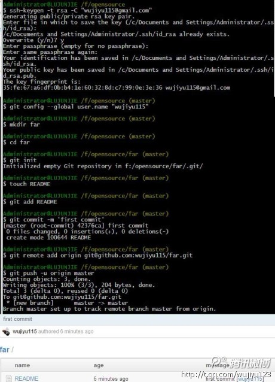

github 操作¶
转自: https://github.com/tiimgreen/github-cheat-sheet
GitHub秘籍¶
Git 和 Github 秘籍，灵感来自于 Zach Holman 在 2012 年 Aloha Ruby Conference 和 2013 年 WDCNZ 上所做的演讲：Git and GitHub Secrets(slides) 和 More Git and GitHub Secrets(slides)。
目录¶
- GitHub
- 不比较空白字符
- 调整 Tab 字符所代表的空格数
- 查看某个用户的 Commit 历史
- 仓库克隆
- 分支
- 将某个分支与其他所有分支进行对比
- 比较分支
- 比较不同派生库的分支
- Gists
- Git.io
- 键盘快捷键
- 整行高亮
- 用 Commit 信息关闭 Issue
- 链接其他仓库的 Issue
- 锁定项目对话功能
- 设置 CI 对每条 Pull Request 都进行构建
- Markdown 文件语法高亮
- 表情符
- 图片 / GIF 动画
- 在 GitHub Wiki 中引用图片
- 快速引用
- 粘贴剪贴板中的图片到评论
- 快速添加许可证文件
- 任务列表
- Markdown 文件中的任务列表
- 相对链接
- GitHub Pages 的元数据与插件支持
- 查看 YAML 格式的元数据
- 渲染表格数据
- 撤销 Pull Request
- Diffs
- 可渲染文档的Diffs
- 可比较的地图数据
- 在 Diff 中展开查看更多的上下文
- 获取 Pull Request 的 diff 或 patch 文件
- 显示图片以及比较图片
- Hub
- 贡献者指南
- Octicons
- GitHub 资源
- GitHub 相关演讲视频
- Git
GitHub¶
快速链接GitHub¶

不比较空白字符¶
在任意 diff 页面的 UR L后加上 ?w=1，可以去掉那些只是空白字符的改动，使你能更专注于代码改动。
调整 Tab 字符所代表的空格数¶
在 diff 或文件的 URL 后面加上 ?ts=4 ，这样当显示 tab 字符的长度时就会是 4 个空格的长度，不再是默认的 8 个空格。 ts 后面的数字还可以根据你个人的偏好进行修改。这个技巧不适用于 Gists，或者以 Raw 格式查看文件， 但有浏览器扩展插件可以帮你自动调整: Chrome 扩展 ， Opera 扩展。
下面以一个 Go 语言源文件为例，看看在 URL 里添加 ?ts=4 参数的效果。添加前：

... 添加后的样子：

查看用户的全部 Commit 历史¶
在 Commits 页面 URL 后加上 ?author={user} 查看用户全部的提交。
https://github.com/rails/rails/commits/master?author=dhh
仓库克隆¶
当克隆仓库时可以不要那个.git后缀。
$ git clone https://github.com/tiimgreen/github-cheat-sheet分支¶
将某个分支与其他所有分支进行对比¶
当你查看某个仓库的分支（Branches）页面（紧挨着 Commits 链接）时
https://github.com/{user}/{repo}/branches你会看到一个包含所有未合并的分支的列表。
在这里你可以访问分支比较页面或删除某个分支。

比较分支¶
如果要在 GitHub 上直接比较两个分支，可以使用如下形式的 URL ：
https://github.com/{user}/{repo}/compare/{range}其中 {range} = master...4-1-stable
例如：
https://github.com/rails/rails/compare/master...4-1-stable
{range} 参数还可以使用下面的形式:
https://github.com/rails/rails/compare/master@{1.day.ago}...master
https://github.com/rails/rails/compare/master@{2014-10-04}...master日期格式 YYYY-MM-DD

在 diff 和 patch 页面里也可以比较分支：
https://github.com/rails/rails/compare/master...4-1-stable.diff
https://github.com/rails/rails/compare/master...4-1-stable.patch比较不同派生库的分支¶
想要对派生仓库（Forked Repository）之间的分支进行比较，可以使用如下的 URL：
https://github.com/user/repo/compare/{foreign-user}:{branch}...{own-branch}例如：
https://github.com/rails/rails/compare/byroot:master...master
Gists¶
Gists 方便我们管理代码片段，不必使用功能齐全的仓库。

Gist 的 URL 后加上 .pibb（像这样）可以得到便于嵌入到其他网站 的 HTML 代码。
Gists 可以像任何标准仓库一样被克隆。
$ git clone https://gist.github.com/tiimgreen/10545817
这意味着你可以像 Github 仓库一样修改和更新 Gists :
$ git commit
$ git push
Username for 'https://gist.github.com':
Password for 'https://tiimgreen@gist.github.com':但是， Gists 不支持目录。所有文件都必须添加在仓库的根目录下。 进一步了解如何创建 Gists.
Git.io¶
Git.io是 Github 的短网址服务。

你可以通过 Curl 命令以普通 HTTP 协议使用它：
$ curl -i http://git.io -F "url=https://github.com/..."
HTTP/1.1 201 Created
Location: http://git.io/abc123
$ curl -i http://git.io/abc123
HTTP/1.1 302 Found
Location: https://github.com/...键盘快捷键¶
在仓库页面上提供了快捷键方便快速导航。
- 按
t键打开一个文件浏览器。 - 按
w键打开分支选择菜单。 - 按
s键聚焦光标到当前仓库的搜索框。此时按退格键就会从搜索当前仓库切换到搜索整个 Github 网站。 - 按
l键编辑 Issue 列表页的标签。 - 查看文件内容时（如：
https://github.com/tiimgreen/github-cheat-sheet/blob/master/README.md），按y键将会冻结这个页面，这样就算代码被修改了也不会影响你当前看到的。
按?查看当前页面支持的快捷键列表：

整行高亮¶
在代码文件地址 URL 后加上#L52或者单击行号 52 都会将第 52 行代码高亮显示。
多行高亮也可以，比如用#L53-L60选择范围，或者按住 shift 键，然后再点击选择的两行。
https://github.com/rails/rails/blob/master/activemodel/lib/active_model.rb#L53-L60
用 Commit 信息关闭 Issue¶
如果某个提交修复了一个 Issue，当提交到 master 分支时，提交信息里可以使用 fix/fixes/fixed, close/closes/closed 或者 resolve/resolves/resolved 等关键词，后面再跟上 Issue 号，这样就会关闭这个 Issue 。
$ git commit -m "Fix screwup, fixes #12"这将会关闭 Issue #12，并且在 Issue 讨论列表里关联引用这次提交。

链接其他仓库的 Issue¶
如果你想引用到同一个仓库中的一个 Issue，只需使用井号 # 加上 Issue 号，这样就会自动创建到此 Issue 的链接。
要链接到其他仓库的 Issue ，就使用{user}/{repo}#ISSUE_NUMBER的方式，例如tiimgreen/toc#12。
锁定项目对话功能¶
现在仓库的管理员和合作者可以将 Pull Requests 和 Issue 的评论功能关闭。

这样，不是项目合作者的用户就不能在这个项目上使用评论功能。

设置 CI 对每条 Pull Request 都进行构建¶
如果配置正确，Travis CI 会为每个你收到的 Pull Request 执行构建，就像每次提交也会触发构建一样。想了解更多关于 Travis CI 的信息，请参考 Travis CI入门。

Markdown 文件语法高亮¶
例如，可以像下面这样在你的 Markdown 文件里为 Ruby 代码添加语法高亮：
```ruby
require 'tabbit'
table = Tabbit.new('Name', 'Email')
table.add_row('Tim Green', 'tiimgreen@gmail.com')
puts table.to_s
```效果如下：
require 'tabbit'
table = Tabbit.new('Name', 'Email')
table.add_row('Tim Green', 'tiimgreen@gmail.com')
puts table.to_sGithub使用 Linguist 做语言识别和语法高亮。你可以仔细阅读 languages YAML file，了解有哪些可用的关键字。
进一步了解 GitHub Flavored Markdown.
表情符¶
可以在 Pull Requests, Issues, 提交消息, Markdown 文件里加入表情符。使用方法 :name_of_emoji:
:smile:将输出一个笑脸：
:smile:
Github 支持的完整表情符号列表详见emoji-cheat-sheet.com 或 scotch-io/All-Github-Emoji-Icons。
Github 上使用最多的5个表情符号是：
:shipit::sparkles::-1::+1::clap:
图片 / GIF 动画¶
注释和README等文件里也可以使用图片和 GIF 动画：
仓库中的图片可以被直接引用：

所有图片都缓存在 Github，不用担心你的站点不能访问时就看不到图片了。
在 GitHub Wiki 中引用图片¶
有多种方法可以在 Wiki 页面里嵌入图片。既可以像上一条里那样使用标准的 Markdown 语法，也可以像下面这样指定图片的高度或宽度：
[[ http://www.sheawong.com/wp-content/uploads/2013/08/keephatin.gif | height = 100px ]]结果：

快速引用¶
在主题评论中引用之前某个人所说的，只需选中文本，然后按 r 键，想要的就会以引用的形式复制到你的输入框里。

粘贴剪贴板中的图片到评论¶
（仅适用于 Chrome 浏览器）
当截屏图片复制到剪贴板后（mac 上用 cmd-ctrl-shift-4），你可以用(cmd-v / ctrl-v)把图片粘贴到评论框里，然后它就会自动上传到 Github。

快速添加许可证文件¶
创建一个仓库时，Github会为你提供一个预置的软件许可列表：

对于已有的仓库，可以通过 web 界面创建文件来添加软件许可。输入LICENSE作为文件名后，同样可以从预置的列表中选择一个作为模板。

这个技巧也适用于 .gitignore 文件。
任务列表¶
Issues 和 Pull requests 里可以添加复选框，语法如下（注意空白符）：
- [ ] Be awesome
- [ ] Prepare dinner
- [ ] Research recipe
- [ ] Buy ingredients
- [ ] Cook recipe
- [ ] Sleep
当项目被选中时，它对应的 Markdown 源码也被更新了：
- [x] Be awesome
- [ ] Prepare dinner
- [x] Research recipe
- [x] Buy ingredients
- [ ] Cook recipe
- [ ] SleepMarkdown 文件中的任务列表¶
在完全适配Markdown语法的文件中可以使用以下语法加入一个只读的任务列表
- [ ] Mercury
- [x] Venus
- [x] Earth
- [x] Moon
- [x] Mars
- [ ] Deimos
- [ ] Phobos- [ ] Mercury
- [x] Venus
- [x] Earth
- [x] Moon
- [x] Mars
- [ ] Deimos
- [ ] Phobos
相对链接¶
Markdown文件里链接到内部内容时推荐使用相对链接。
[Link to a header](#awesome-section)
[Link to a file](docs/readme)绝对链接会在 URL 改变时（例如重命名仓库、用户名改变，建立分支项目）被更新。使用相对链接能够保证你的文档不受此影响。
GitHub Pages 的元数据与插件支持¶
在 Jekyll 页面和文章里，仓库信息可在 site.github 命名空间下找到，也可以显示出来，例如，使用 {{ site.github.project_title }}显示项目标题。
Jemoji 和 jekyll-mentions 插件为你的 Jekyll 文章和页面增加了emoji和@mentions功能。
查看 YAML 格式的元数据¶
许多博客站点，比如基于 Jekyll的GitHub Pages ，都依赖于一些文章头部的 YAML 格式的元数据。 Github 会将其渲染成一个水平表格，方便阅读。
渲染表格数据¶
GitHub 支持将 .csv (逗号分隔)和 .tsv (制表符分隔)格式的文件渲染成表格数据。
撤销 Pull Request¶
合并一个 Pull Request 之后，你可能会反悔：要么是这次 Pull Request 没什么用处，要么是还不到合并的时候。
此时可以通过 Pull Request 中的 Revert 按钮来撤销一个已合并的 Pull Request 中的 commit。按下按钮后将自动生成一个进行逆操作的 Pull Request。
Diffs¶
可渲染文档的Diffs¶
Commit 和 Pull Request 里包含有 Github 支持的可渲染文档（比如 Markdown）会提供source 和 rendered 两个视图功能。

点击 "rendered" 按钮，看看改动在渲染后的显示效果。当你添加、删除或修改文本时，渲染纯文本视图非常方便。

可比较的地图数据¶
当你在GitHub上查看一个包含地理数据的 commit 或 pull request时，Github 将以可视化的方式对比版本之间的差异。

在 Diff 中展开查看更多的上下文¶
你可以通过点击 diff 边栏里的 unfold 按钮来多显示几行上下文。你可以一直点击 unfold 按钮直到显示了文件的全部内容。这个功能在所有 GitHub 的 diff 功能中都可以使用。

获取 Pull Request 的 diff 或 patch 文件¶
在 Pull Request 的 URL 后面加上 .diff 或 .patch 的扩展名就可以得到它的 diff 或 patch 文件，例如：
https://github.com/tiimgreen/github-cheat-sheet/pull/15
https://github.com/tiimgreen/github-cheat-sheet/pull/15.diff
https://github.com/tiimgreen/github-cheat-sheet/pull/15.patch.diff 扩展会使用普通文本格式显示如下内容：
diff --git a/README.md b/README.md
index 88fcf69..8614873 100644
--- a/README.md
+++ b/README.md
@@ -28,6 +28,7 @@ All the hidden and not hidden features of Git and GitHub. This cheat sheet was i
- [Merged Branches](#merged-branches)
- [Quick Licensing](#quick-licensing)
- [TODO Lists](#todo-lists)
+- [Relative Links](#relative-links)
- [.gitconfig Recommendations](#gitconfig-recommendations)
- [Aliases](#aliases)
- [Auto-correct](#auto-correct)
@@ -381,6 +382,19 @@ When they are clicked, they will be updated in the pure Markdown:
- [ ] Sleep
(...)显示图片以及比较图片¶
GitHub 可以显示包括 PNG、JPG、GIF、PSD 在内的多种图片格式并提供了几种方式来比较这些格式的图片文件版本间的不同。

Hub¶
Hub 是一个对 Git 进行了封装的命令行工具，可以帮助你更方便的使用 Github。
例如可以像下面这样进行克隆：
$ hub clone tiimgreen/toc贡献者指南¶
在仓库的根目录添加一个名为 CONTRIBUTING 的文件后，贡献者在新建 Issue 或 Pull Request 时会看到一个指向这个文件的链接。
Octicons¶
GitHubs 图标库 (Octicons) 现已开源。

GitHub 资源¶
| 内容 | 链接 |
|---|---|
| 探索 GitHub | https://github.com/explore |
| GitHub 博客 | https://github.com/blog |
| GitHub 帮助 | https://help.github.com/ |
| GitHub 培训 | http://training.github.com/ |
| GitHub 开发者 | https://developer.github.com/ |
GitHub 相关演讲视频¶
| 内容 | 链接 |
|---|---|
| How GitHub Uses GitHub to Build GitHub | https://www.youtube.com/watch?v=qyz3jkOBbQY |
| Introduction to Git with Scott Chacon of GitHub | https://www.youtube.com/watch?v=ZDR433b0HJY |
| How GitHub No Longer Works | https://www.youtube.com/watch?v=gXD1ITW7iZI |
| Git and GitHub Secrets | https://www.youtube.com/watch?v=Foz9yvMkvlA |
| More Git and GitHub Secrets | https://www.youtube.com/watch?v=p50xsL-iVgU |
Git¶
从工作区去除大量已删除文件¶
当用 /bin/rm 命令删除了大量文件之后，你可以用下面一条命令从工作区和索引中去除这些文件，以免一个一个的删除：
$ git rm $(git ls-files -d)例如:
$ git status
On branch master
Changes not staged for commit:
deleted: a
deleted: c
$ git rm $(git ls-files -d)
rm 'a'
rm 'c'
$ git status
On branch master
Changes to be committed:
deleted: a
deleted: c上一个分支¶
快速检出上一个分支：
$ git checkout -
# Switched to branch 'master'
$ git checkout -
# Switched to branch 'next'
$ git checkout -
# Switched to branch 'master'去除空白¶
Git Stripspace 命令可以:
- 去掉行尾空白符
- 多个空行压缩成一行
- 必要时在文件末尾增加一个空行
使用此命令时必须传入一个文件，像这样：
$ git stripspace < README.md检出 Pull Requests¶
对 Github 仓库来说，Pull Request 是种特殊分支， 可以通过以下多种方式取到本地：
取出某个特定的 Pull Request 并临时作为本地的 FETCH_HEAD 中以便进行快速查看更改( diff )以及合并( merge )：
$ git fetch origin refs/pull/[PR-Number]/head通过 refspec 获取所有的 Pull Request 为本地分支：
$ git fetch origin '+refs/pull/*/head:refs/remotes/origin/pr/*'或在仓库的 .git/config 中加入下列设置来自动获取远程仓库中的 Pull Request
[remote "origin"]
fetch = +refs/heads/*:refs/remotes/origin/*
url = git@github.com:tiimgreen/github-cheat-sheet.git[remote "origin"]
fetch = +refs/heads/*:refs/remotes/origin/*
url = git@github.com:tiimgreen/github-cheat-sheet.git
fetch = +refs/pull/*/head:refs/remotes/origin/pr/*对基于派生库的 Pull Request，可以通过先 checkout 代表此 Pull Request 的远端分支再由此分支建立一个本地分支：
$ git checkout pr/42 pr-42操作多个仓库的时候，可以在 Git 中设置获取 Pull Request 的全局选项。
git config --global --add remote.origin.fetch "+refs/pull/*/head:refs/remotes/origin/pr/*"此时可以在任意仓库中使用以下命令：
git fetch origingit checkout pr/42没有任何改动的提交¶
可以使用--allow-empty选项强制创建一个没有任何改动的提交：
$ git commit -m "Big-ass commit" --allow-empty这样做在如下几种情况下是有意义的：
- 标记新的工作或一个新功能的开始。
- 记录对项目的跟代码无关的改动。
- 跟使用你仓库的其他人交流。
- 作为仓库的第一次提交，因为第一次提交后不能被 rebase：
git commit -m "init repo" --allow-empty.
美化 Git Status¶
在命令行输入如下命令:
$ git status可以看到:

加上-sb选项:
$ git status -sb这会得到:

美化 Git Log¶
输入如下命令:
$ git log --all --graph --pretty=format:'%Cred%h%Creset -%C(yellow)%d%Creset %s %Cgreen(%cr) %C(bold blue)<%an>%Creset' --abbrev-commit --date=relative可以看到:

这要归功于 Palesz 在 stackoverflow 的回答。
这个命令可以被用作别名，详细做法见这里。
Git 查询¶
Git 查询运行你在之前的所有提交信息里进行搜索，找到其中和搜索条件相匹配的最近的一条。
$ git show :/query这里 query （区别大小写）是你想要搜索的词语， 这条命令会找到包含这个词语的最后那个提交并显示变动详情。
$ git show :/typo
- 按
q键退出命令。*
合并分支¶
输入命令:
$ git branch --merged这会显示所有已经合并到你当前分支的分支列表。
相反地：
$ git branch --no-merged会显示所有还没有合并到你当前分支的分支列表。
修复有问题的提交以及自动合并¶
如果上一个或多个提交包含了错误，可以在你修复问题后使用下列命令处理（假设要修复的提交版本是abcde）：
$ git commit --fixup=abcde
$ git rebase abcde^ --autosquash -i进一步了解 Git commit 命令.
进一步了解 Git rebase 命令.
以网站方式查看本地仓库¶
使用 Git 的 instaweb 可以立即在 gitweb 中浏览你的工作仓库。这个命令是个简单的脚本，配置了 gitweb 和用来浏览本地仓库的Web服务器。（译者注：默认需要lighttpd支持）
$ git instaweb执行后打开：

Git 配置¶
所有 Git 配置都保存在你的 .gitconfig 文件中。
Git 命令自定义别名¶
别名用来帮助你定义自己的 git 命令。比如你可以定义 git a 来运行 git add --all。
要添加一个别名， 一种方法是打开 ~/.gitconfig 文件并添加如下内容：
[alias]
co = checkout
cm = commit
p = push
# Show verbose output about tags, branches or remotes
tags = tag -l
branches = branch -a
remotes = remote -v...或者在命令行里键入：
$ git config --global alias.new_alias git_function例如：
$ git config --global alias.cm commit指向多个命令的别名可以用引号来定义：
$ git config --global alias.ac 'add -A . && commit'下面列出了一些有用的别名：
| 别名 Alias | 命令 Command | 如何设置 What to Type |
|---|---|---|
git cm |
git commit |
git config --global alias.cm commit |
git co |
git checkout |
git config --global alias.co checkout |
git ac |
git add . -A git commit |
git config --global alias.ac '!git add -A && git commit' |
git st |
git status -sb |
git config --global alias.st 'status -sb' |
git tags |
git tag -l |
git config --global alias.tags 'tag -l' |
git branches |
git branch -a |
git config --global alias.branches 'branch -a' |
git cleanup |
git branch --merged | grep -v '*' | xargs git branch -d |
git config --global alias.cleanup "!git branch --merged | grep -v '*' | xargs git branch -d" |
git remotes |
git remote -v |
git config --global alias.remotes 'remote -v' |
git lg |
git log --color --graph --pretty=format:'%Cred%h%Creset -%C(yellow)%d%Creset %s %Cgreen(%cr) %C(bold blue)<%an>%Creset' --abbrev-commit -- |
git config --global alias.lg "log --color --graph --pretty=format:'%Cred%h%Creset -%C(yellow)%d%Creset %s %Cgreen(%cr) %C(bold blue)<%an>%Creset' --abbrev-commit --" |
自动更正¶
如果键入 git comit 你会看到如下输出：
$ git comit -m "Message"
# git: 'comit' is not a git command. See 'git --help'.
# Did you mean this?
# commit为了在键入 comit 调用 commit命令，只需启用自动纠错功能：
$ git config --global help.autocorrect 1现在你就会看到：
$ git comit -m "Message"
# WARNING: You called a Git command named 'comit', which does not exist.
# Continuing under the assumption that you meant 'commit'
# in 0.1 seconds automatically...颜色输出¶
要在你的 Git 命令输出里加上颜色的话，可以用如下命令：
$ git config --global color.ui 1Git 资源¶
| Title | Link |
|---|---|
| Official Git Site | http://git-scm.com/ |
| Official Git Video Tutorials | http://git-scm.com/videos |
| Code School Try Git | http://try.github.com/ |
| Introductory Reference & Tutorial for Git | http://gitref.org/ |
| Official Git Tutorial | http://git-scm.com/docs/gittutorial |
| Everyday Git | http://git-scm.com/docs/everyday |
| Git Immersion | http://gitimmersion.com/ |
| Ry's Git Tutorial | http://rypress.com/tutorials/git/index.html |
| Git for Computer Scientists | http://eagain.net/articles/git-for-computer-scientists/ |
| Git Magic | http://www-cs-students.stanford.edu/~blynn/gitmagic/ |
| GitHub Training Kit | http://training.github.com/kit |
| Git Visualization Playground | http://onlywei.github.io/explain-git-with-d3/#freeplay |
Git 参考书籍¶
| Title | Link |
|---|---|
| Pragmatic Version Control Using Git | http://www.pragprog.com/titles/tsgit/pragmatic-version-control-using-git |
| Pro Git | http://git-scm.com/book |
| Git Internals Pluralsight | https://github.com/pluralsight/git-internals-pdf |
| Git in the Trenches | http://cbx33.github.com/gitt/ |
| Version Control with Git | http://www.amazon.com/Version-Control-Git-collaborative-development/dp/1449316387 |
| Pragmatic Guide to Git | http://www.pragprog.com/titles/pg_git/pragmatic-guide-to-git |
| Git: Version Control for Everyone | http://www.packtpub.com/git-version-control-for-everyone/book |